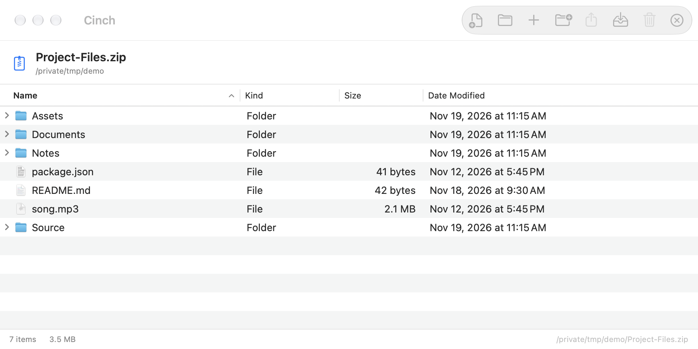

2026-11-19
Re-signed the app after bundling cinch-mcp, rebuilt 1.3, and documented the xattr quarantine workaround in the README.
A native macOS archive editor for .zip, .tar and .tar.gz files — browse, edit, and extract archives without ever dropping to the command line.
Cinch is written in Swift with SwiftUI and AppKit, and shows archive contents in a familiar Finder-style multi-column outline view. It also bundles cinch-mcp, an MCP server that lets AI assistants work with archives using the same engines as the app.

tar.gz / tgz) files.cinch-mcp exposes ten archive tools to Cline, Claude Code, Claude Desktop, and other MCP clients.On macOS, install the latest release with Homebrew:
brew tap kdekorte/cinch https://github.com/kdekorte/Cinch
brew install --cask kdekorte/cinch/cinchYou can also download Cinch-<version>.zip from the releases page and drag Cinch.app to /Applications.
Cinch is not notarized by Apple, so macOS may report that it is "damaged" on first launch. If you trust the download, remove the quarantine attribute and open it again:
xattr -dr com.apple.quarantine /Applications/Cinch.appOnce Cinch is in /Applications, point your MCP client at the bundled binary. For Cline or Claude Desktop:
{
"mcpServers": {
"cinch": {
"command": "/Applications/Cinch.app/Contents/MacOS/cinch-mcp"
}
}
}For Claude Code:
claude mcp add cinch -- /Applications/Cinch.app/Contents/MacOS/cinch-mcp2026-11-19
Re-signed the app after bundling cinch-mcp, rebuilt 1.3, and documented the xattr quarantine workaround in the README.
2026-11-17
Version 1.3 added cinch-mcp, a stdio MCP server bundled inside the app. It offers ten tools for listing, reading, extracting, creating, and editing archives, including AES-256 passwords. The release process now publishes curated release notes.
2026-11-13
Versions 1.1 and 1.2 added password-protected zip support through libzip, with AES-256 encryption on save. Drag-out now extracts real file contents instead of empty placeholders, and double-clicking a file opens it in its default application.
2026-11-12
Added drag-and-drop moves between folders, a Homebrew cask, and a release script that builds the zip, pkg, and source archive. Registered Cinch as a handler for zip archives and gave it an app icon.
2026-11-11
Modernized the UI with a native toolbar, an archive header, a status bar, and a redesigned empty state. Added the README, a command-line build script, and the MIT license.
2026-07-16
A basic working demo, following the initial commit on 2026-07-13.